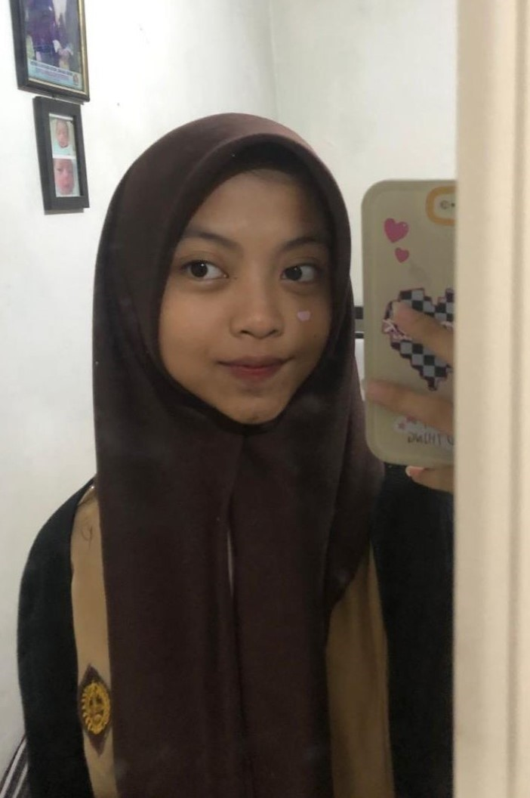
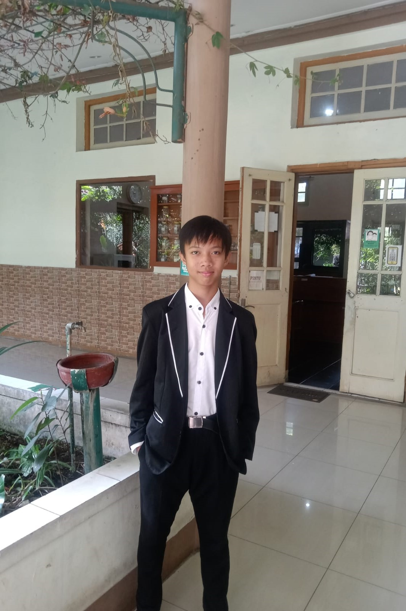

KELOMPOK 2
Website Ini Dikerjakan Oleh Kelompok 2 Kelas X-10,
Dengan Tujuan Menyampaikan Toleransi Beragama dan Berbudaya





Website Ini Dikerjakan Oleh Kelompok 2 Kelas X-10,
Dengan Tujuan Menyampaikan Toleransi Beragama dan Berbudaya
Sikap toleransi dalam beragama memiliki pengertian yaitu tindakan saling menghargai antar umat beragama. Sikap toleransi antar budaya merupakan salah satu sikap saling menghormati,menghargai satu sama lain dalam menyikapi perbedaan tersebut.
Toleransi diyakini berasal dari bahasa latin yakni tolerare yang berarti menahan diri, bersikap sabar, membiarkan orang lain berpendapat lain, dan berhati lapang terhadap orang-orang yang berbeda pendapat. Toleransi secara umum adalah sikap yang menghormati antar manusia tentang agama yang dipeluk tanpa mencela sedikit pun dengan alasan apapun.
Konsep toleransi telah ada sepanjang sejarah manusia, namun penekanan dan penerapannya bisa bervariasi dalam berbagai periode waktu. Pada zaman kuno, beberapa budaya seperti Yunani kuno dan India kuno telah menunjukkan elemen toleransi terhadap perbedaan agama dan budaya.
Namun, pemahaman dan praktik toleransi lebih berkembang selama Abad Pencerahan di Eropa (abad ke-17 dan 18) dengan penekanan pada hak asasi manusia, kebebasan berpikir, dan prinsip-prinsip toleransi. Pemikir seperti John Locke dan Voltaire memainkan peran penting dalam mempromosikan ide-ide toleransi pada masa itu.
Sejak saat itu, konsep toleransi terus berkembang dan menjadi bagian integral dari masyarakat modern, dengan pengakuan hak asasi manusia dan upaya untuk menciptakan masyarakat yang lebih inklusif dan adil. info lengkap disini
Indonesia adalah negara dengan banyak perbedaan di dalam masyarakat, tidak hanya budaya, tapi juga agama. Meski bangsa Indonesia memiliki semboyan Bhinneka Tunggal Ika yang berarti walau berbeda-beda atau beraneka ragam tapi tetap satu juga, pada penerapannya sendiri masih cukup banyak masyarakat yang kurang mampu menerima perbedaan.
Negara plural seperti Indonesia, rentan terjadi perpecahan. Sehingga masyarakat harus dengan sadar dan menerapkan nilai toleransi agar Indonesia terhindar dari perpecahan, terutama berkaitan tentang agama.
Sikap toleransi menumbuhkan rasa kassih dan meningkatkian rasa persaudaraan antarsesama, sehingga menghindarkan adanya kesalahpahaman dan permusuhan.


Pada November 2020, ada oknum yang melarang anak didiknya memilih ketua OSIS nonmuslim. Hal tersebut mencuat setelah beredarnya tangkapan layar dari oknum guru berinisial TS menyampaikan instruksi rasis dalam grup WhatsApp. Guru tersebut meminta para siswa tidak memilih pemimpin yang berbeda agama.
Untuk mengatasi sikap intoleran dalam pemilihan ketua OSIS, penting untuk mempromosikan dialog terbuka, meningkatkan pemahaman tentang keberagaman, dan menyelenggarakan kegiatan inklusif yang melibatkan seluruh siswa.
Pada Juli 2022, terjadi diskriminasi di mana ada orangtua murid yang mengadukan tindakan intoleransi yang dialami oleh anaknya di sekolah tersebut. Anaknya mendapatkan paksaan untuk mengikuti pelajaran Kristen Protestan, padahal mereka menganut agama Hindu dan Buddha.
Berikan pendidikan tentang Keberagaman Agama. Sertakan kurikulum yang memperkenalkan siswa pada berbagai agama dan keyakinan dan berikan pelatihan kepada guru untuk mengelola dan merespons perbedaan agama di antara siswa, serta mempromosikan sikap inklusif.
Pada Juli 2022, terdapat siswa non muslim yang dipaksa mengikuti kegiatan muslim dari cara menyapa, kegiatan di lapangan, pengajian di dalam Musala, hingga berdoa saat pulang.
Memberikan edukasi kepada seluruh siswa tentang toleransi, keragaman, dan pentingnya menghormati perbedaan keyakinan dengan mengadakan kegiatan dialog antar agama untuk membangun pemahaman dan toleransi antar siswa dan menciptakan lingkungan sekolah yang inklusif dan ramah bagi semua siswa, tanpa memandang keyakinan mereka.
Toleransi adalah pondasi yang penting untuk kehidupan yang harmonis bagi masyarakat yang beragam. Menumbuhkan sikap toleransi membutuhkan upaya bersama, mulai dari keluarga, sekolah hingga masyarakat. Dengan adanya toleransi kita dapat membangun dunia yang lebih damai, tentram dan inklusif (pendekatan untuk membangun dan mengembangkan lingkungan yang lebih terbuka) bagi generasi masa kini maupun generasi masa mendatang
Kampung Toleransi di Kota Bandung merupakan bentuk komitmen pemerintah dalam mengapresiasi kepada suatu daerah yang memiliki tingkat toleransi yang sangat baik, aktif, dan progresif. Kampung Toleransi diinisiasi sebagai upaya pemeliharaan keberagaman dan kebhinekaan di Kota Bandung.
Hingga saat ini, terdapat sejumlah Kampung Toleransi di Kota Bandung, salah satunya adalah Kampung Toleransi di Gang Luna. Kampung Toleransi Gang Luna merupakan sejumput praktik bertoleransi di kota kembang ini. Berlokasi di RW 04, Kelurahan Jamika, Kecamatan Bojong Loa Kaler, Kota Bandung, Jawa Barat. Kampung Toleransi Gang Luna memiliki cerita di balik peresmiannya menjadi episentrum toleransi.
Ciri khas mencolok dari bentuk toleransi di Gang Luna adalah dengan terdirinya sejumlah tempat ibadah dari agama yang berbeda. Diketahui, terdapat empat gereja, empat wihara, dan dua masjid. Keberadaan sejumlah tempat ibadah tersebut saling berdekatan satu sama lain. Disana tidak pernah terdengar kabar bentrok dan rusuh antarumat beragama di sana.
Sikap rukun bergama di Rw 04, diketahui sudah ada jauh sebelum pendeklarasiannya sebagai Kampung Toleransi. Ketua Kampung Toleransi Rw 04, menceritakan ihwal kerukunan di gang tersebut “Sebelum dideklarasikan sebagai Kampung Toleransi, di sini memang tingkat toleransi dan kebersamaan dalam bermasyarakat sangat tinggi sekali walaupun berbeda-beda keyakinan. Ada Kristen, Katolik, Buddha, Islam, dan Hindu. Walaupun Hindu cuma beberapa orang, ketika ada kegiatan yang berifat kemasyarakatan dan wilayah, seluruh warga sangat berpartisipasi,” terangnya. Senada, Sekretaris Kampung Toleransi Jahja Kosim turut menyampaikan bahwa sikap toleransi di Gang Luna bukan semata hadir setelah peresemiannya, melainkan sudah tertanam sejak dahulu kala.
“Saat mengundang sesepuh yang dulu aktif di karang taruna RW 04 ini, cerita yang didapat adalah tempat ibadah dari berbagai keyakinan yakni ada masjid, gereja, dan wihara ini sudah ada sejak mereka (sesepuh) tinggal di sini,” kata Kosim.
Kosim juga menerangkan bahwa ketika adanya perayaan hari besar keagamaan baik Islam maupun non-Islam, baik secara finansial maupun jasa, masyarakat di sana saling bantu dan mendukung kesuksesan acara satu sama lain.
“Di sini jika ada perayaan Natal, masyarakat lain dari Muslim, Buddha, Hindu, dan Khonghucu membantu mengamankan dan menjaga lalu lintas. Sebaliknya, kalau Imlek, umat Islam dan agama lain juga ikut mengamankan. Kegiatan seperti ini sudah biasa dilakukan orang tua dulu,” paparnya.
Tokoh Masyarakat Islam setempat Iim Ibrahim turut mengatakan hal yang sama. Sikap saling bantu pada saat perayaan hari besar keagamaan telah mendarah daging di sana.
“Sebelumnya dibentuk Kampung Toleransi memang sudah terasa toleransinya. Jadi hidup ini serasa aman lah, saling bertoleransi, bantu-membantu. Contohnya, kalau kita merayakan hari besar Islam, mereka sangat mendukung keamananan. Begitupun saat Natal, kita jaga keamanannya,” terangnya.
Saat Ramadhan pun, Kampung Toleransi RW 04 turut mengadakan kegiatan buka bersama, seperti yang pernah berlangsung di wihara Dharma Ramsi. Secara administratif, wihara Dharma Ramsi bukan termasuk bagian dari wilayah Gang Luna.
Kendati demikian, wihara tersebut kerap melangsungkan kegiatannya di Kampung Toleransi Gang Luna. Hal tersebut dikarenakan jalan yang membatasi wilayah Gang Luna dengan Dharma Ramsi diketahui saling digunakan oleh kedua wilayah tersebut.
Sebelum perayaan Hari Kemerdekaan Indonesia tepatnya setiap tanggal 16 Agustus, masyarakat Kampung Toleransi RW 04 rutin mengadakan perkumpulan yang biasa disebut Malam Tasyakur. Kegiatan ini memuat acara doa bersama menurut kepercayaan masing-masing demi keberlangsungan kerukunan di sana. Semua tokoh agama diundang, kegiatannya pertama doa bersama. Lalu ada seperti upacara begitu, menyanyikan lagu Indoneisa raya dan ditutup dengan makan bersama.
Pendeta gereja Rehoboth Ebenhaezat Suherman mengungkapkan bahwa sejatinya perbedaan adalah keniscayaan. Berbeda bukan berarti bermusuhan, melainkan bagaimana mengatur ritme untuk tetap berjalan beriringan. “Dengan persepsi yang berbeda itu kita hargai apa yang orang lain percayai, karena tidak bisa kita memaksakan. Kalau kita memaksakan akhirnya menjadi bentrok. Jadi, harus kita bisa menghormati dengan baik,”

.jpg)